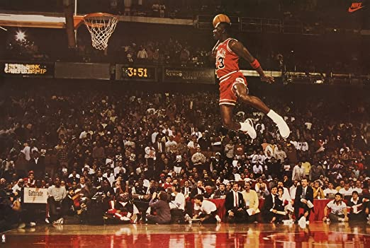

Michael Jordan in the dunk competition
Michael Jeffrey “MJ” Jordan (born February 17, 1963) is a retired American basketball player who led the Chicago Bulls to six national championships and a 5-time NBA Most Valuable Player. He played a total of 15 seasons. MJ was one of the most effectively marketed athletes of his generation, popularizing the NBA around the globe during the 80s and 90s. He attended the University of North Carolina at Chapel Hill and became the star player for the NCAA Division I championships in 1982. He was named the NCAA College Player of the Year in 1983 and 1984. MJ left during his junior year in college to join the NBA. To learn more about Michael Jordan's life, go to MJ's Wikipedia.